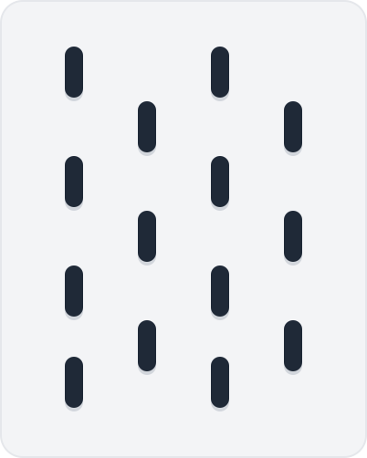
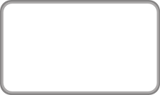
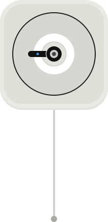
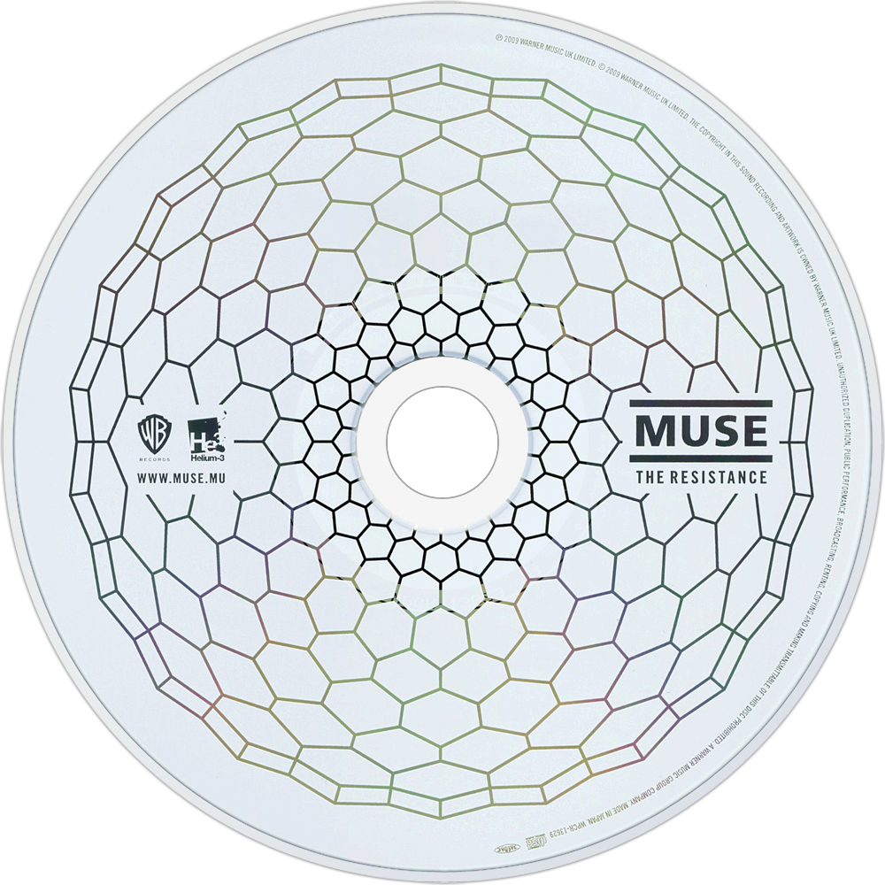
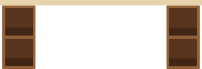

Recent Projects
Launch the website- 3D printed Coffee filter holder
- Reuse old mobile CD-player into wall-mounted CD-player
- Create personal weekly Spotify wrapped
- CO2 sensor (ESP Home and Home Assistant)
- E-ink screen for meteo, agenda,...



Records Reading